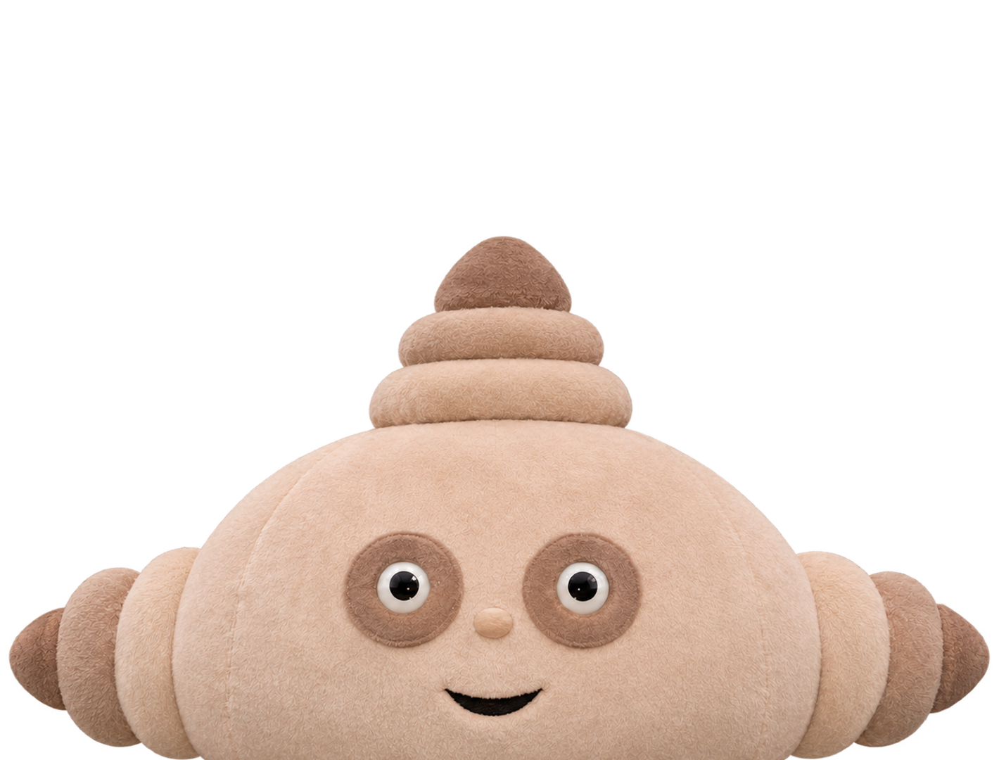

2007년 영국에서 방영된 어린이 TV 프로그램 ‘꿈나라 꿈동산(In the Night Garden)’에 등장하는 캐릭터로,
정원 한쪽의 작은 동굴에 살고 있다.
베이지색의 둥글고 통통한 몸에 짧은 팔다리, 머리 위에 돌멩이를 쌓아 올린 듯한 독특한 외형이 특징이다.
무표정에 가까운 얼굴과 느릿느릿한 움직임이 어딘가 엉뚱하고 하찮은 매력을 자아낸다.
매카패카의 가장 큰 취미는 돌멩이를 모아 깨끗하게 씻고 가지런히 쌓아두는 것.
비누와 스펀지를 실은 수레를 끌고 다니며 친구들의 얼굴까지 씻어주는 독특한 습관을 가지고 있다.
